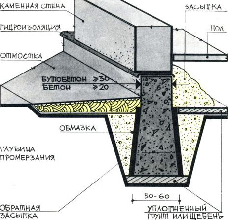
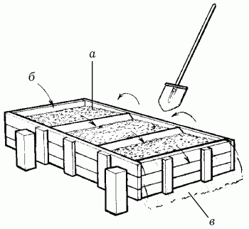
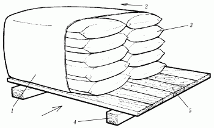

Ошибки при производстве бетонных работ.

При использовании бетона в строительстве часто допускаются следующие ошибки:
– отсутствие специализированной техники для замешивания бетона:
– применение загрязненных заполнителей;
– использование длительно хранившегося цемента;
– применение некачественной воды;
– передозировка добавок.
Не секрет, что в большинстве случаев приготовлением, транспортировкой, укладкой и уходом за бетоном занимаются не специалисты, почти не соблюдающие технические требования при работе с этим материалом. Несмотря на то, что для работы часто приглашают рабочих специализированных строительных фирм, нет гарантии, что качество строительства будет на высшем уровне.
Ошибки, допускаемые при работе с заполнителямиНа качестве готового бетонного раствора часто сказывается загрязнение заполнителей вследствие их неправильного хранения. Качество материала снижают попавшие в гравий стружки, отходы древесины, битый кирпич, куски шлака, снега и пр. Органические вещества, присутствующие в гравии, могут снизить прочность бетона вследствие образования коррозии в арматуре.
Загрязненность заполнителей влияет также на морозостойкость, водонепроницаемость, теплоизоляцию и др. свойства бетона.
Наличие глины в гравии определяют следующим образом: берут стеклянную банку емкостью 1 л, заполняют ее на 1/4 песчанистым гравием, доливают водой до 3/4 и сильно взбалтывают. Через 1 час на гравии станет заметен слой илистых и глинистых частиц, толщину которого измеряют и соотносят со всем объемом гравия.
Излишнее содержание глины снижают различными способами. Однако чаще всего используют промывку (рис. 10).

Рис. 10. Промывка песчанистого гравия от глинистых частиц: а – гравий; б – направление потока воды; в – сток воды.
Ошибки, допускаемые при работе с цементомЦемент является важнейшим составляющим бетона. Именно с ним связана самая распространенная ошибка – замешивание большего количества цемента, чем это требуется рецептурой. Несоблюдение технических требований приводит к снижению прочности бетона: в нем происходит чрезмерная усадка, появляется много трещин.
Желание сэкономить на цементе приводит к другой ошибке – уменьшению его количества приприготовлении бетонной смеси. В бетоне, приготовленном с небольшим количеством цемента, частицы заполнителя склеиваются друг с другом только отдельными точками. В этом случае бетон не только теряет прочность, но и становится водопроницаемым, не защищает арматуру от коррозии, что приводит к разрушению железобетонной конструкции.
Не рекомендуется использовать долго хранящийся цемент, поскольку он теряет свои свойства в процессе длительного или неправильного хранения. Этот материал следует хранить только в защищенном от ветра и влажного воздуха месте. Для этого мешки с цементом укладывают на деревянный настил, который отстоит от пола не менее чем на 40 см. Однако даже в этом случае цемент не рекомендуется хранить более 3 месяцев. Если требуется длительное хранение (более 4 месяцев), мешки с цементом плотно накрывают брезентом, перекрывая доступ влажному воздуху (рис. 11).

Рис. 11. Хранение цемента длительное время: 1 – брезент; 2 – направление проветривания; 3 – мешки с цементом; 4 – сосновый брус; 5 – настил из досок.
Дата изготовления проставлена на внешней стороне мешка. В открытом мешке цемент хранят не более недели в сухую погоду и не более суток – в сырую.
Ошибки, допускаемые при работе с водой и добавками для бетонаДля замешивания бетонного раствора требуется водопроводная вода. Вода с высоким содержанием примесей и солей для затворения цемента непригодна. К примеру, содержащиеся в воде сульфаты разъедают и разрушают бетон.
При приготовлении бетона все чаще и чаще используют различные добавки для улучшения некоторых свойств бетонной смеси, например повышения водостойкости, износостойкости, удобоукладываемости. Однако внесение большего количества добавок чревато серьезными последствиями – появляется поверхностная фильтрация, пятна. В большинстве случаев такие дефекты исправить уже невозможно. Остается только заменить конструкцию полностью.